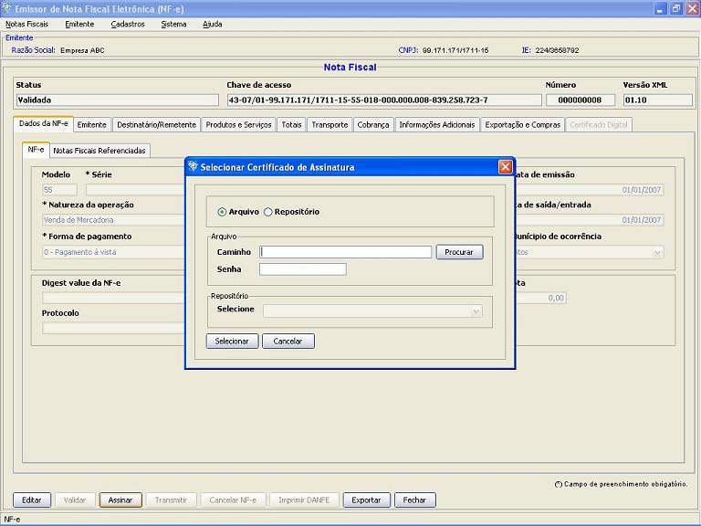
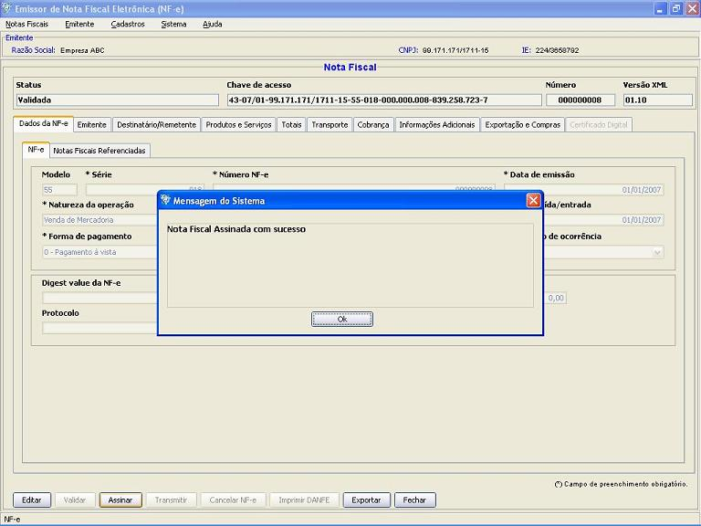

Software Emissor NF-e
Assinando uma Nota
Fiscal
eletrônica (NF-e)
A assinatura é
parte integrante do
processo de emissão, garantindo a integridade e
autoria da Nota Fiscal eletrônica.
Para realizar a assinatura é necessário possuir
um
Certificado Digital ICP-Brasil válido, contendo o CNPJ do
emissor.
Pré-condição:
-Um emitente
deverá estar previamente iniciado.
-Deve(m) ser selecionado(s) NF-e('s) em
situação igual a "Validada"
-Deve-se possuir um Certificado Digital
ICP-Brasil válido para o Projeto Nota Fiscal
eletrônica
Existem duas formas para
a realização da assinatura:
1 ) Pela tela de
Detalhamento/Edição da NF-e:
- Na tela de
detalhamento/edição de NF-e, acessar a
opção Assinar
- Na janela de
seleção de Certificado Digital, escolher o
Arquivo (para
Certificado tipo A1), informando a senha, ou Repositório
(para Certificado tipo A3)

- Após a
seleção, clicar em Selecionar.
- Caso não haja
problemas com o certificado, a nota será assinada, ficando
com a situação igual a "Assinada" e pronta para
ser transmitida para a SEFAZ correspondente.

2 ) Pela tela de
Gerenciamento de NF-e's:
- Acessar o menu: Notas Fiscais -> Gerenciar
Notas
- Realizar a
pesquisa pela(s) nota(s) com situação "Validada"
que será(ão) assinada(s)
- Selecionar a(s)
nota(s) a ser(em) assinada(s) e clicar em Assinar
- Na janela de
seleção de Certificado Digital, escolher o
Arquivo (para
Certificado tipo A1), informando a senha, ou Repositório
(para Certificado tipo A3)
- Após a
seleção, clicar em Selecionar.
- Caso não haja
problemas com o certificado, a nota será assinada, ficando
com a situação igual a "Assinada" e pronta para
ser transmitida para a SEFAZ correspondente.